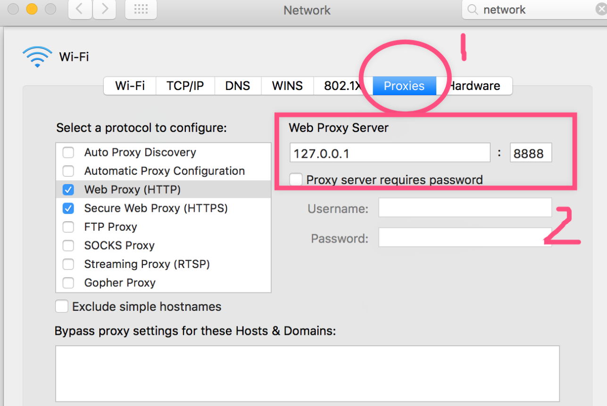
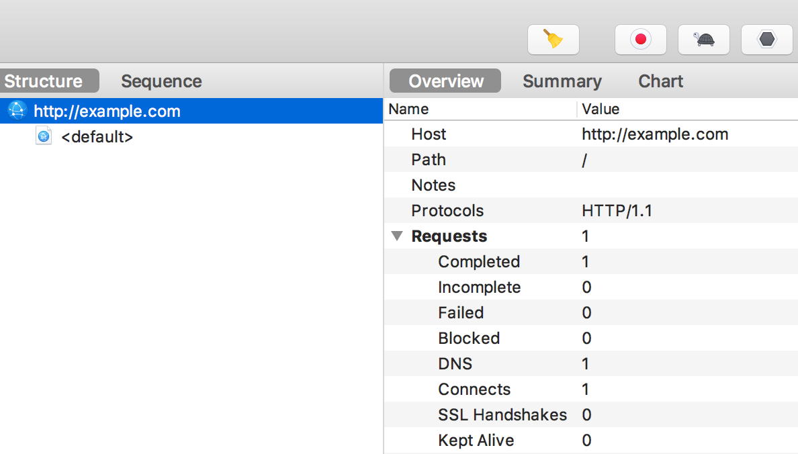

设置为系统代理
首次启动，如果你的操作系统是 macOS 的话，他会提示你是否把他设为「系统代理」。如果不小心按了「否」的话，没关系，可以手动地设置：
顶部菜单栏 -> Proxy -> macOS Proxy

如果设置成功的话，我们打开：
system Preferences -> Network -> 当前网络的 Advanced -> Proxy

可以看到我们系统的 HTTP 请求代理到了 127.0.0.1:8888：

这个 127.0.0.1:8888 和 Charles 上的 Proxy Setting 是一致的：

所以，只要把 HTTP 请求发送到 127.0.0.1:8888 的话，Charles 就可以捕捉这些请求。
curl http://example.com --proxy 127.0.0.1:8888
